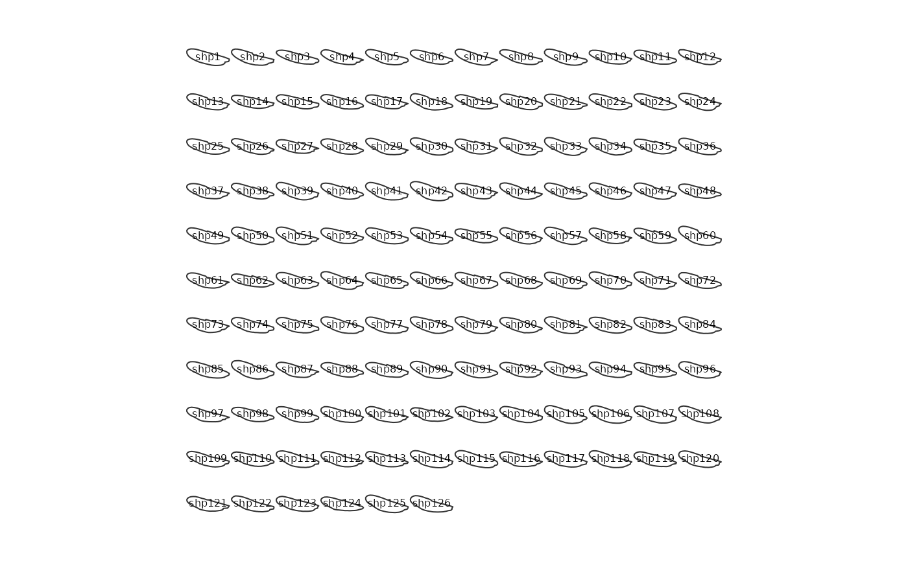

Usage
panel(x, ...)
# S3 method for class 'Out'
panel(
x,
dim,
cols,
borders,
fac,
palette = col_summer,
coo_sample = 120,
names = NULL,
cex.names = 0.6,
points = TRUE,
points.pch = 3,
points.cex = 0.2,
points.col,
...
)
# S3 method for class 'Opn'
panel(
x,
cols,
borders,
fac,
palette = col_summer,
coo_sample = 120,
names = NULL,
cex.names = 0.6,
points = TRUE,
points.pch = 3,
points.cex = 0.2,
points.col,
...
)
# S3 method for class 'Ldk'
panel(
x,
cols,
borders,
fac,
palette = col_summer,
names = NULL,
cex.names = 0.6,
points = TRUE,
points.pch = 3,
points.cex = 0.2,
points.col = "#333333",
...
)Arguments
- x
The
Cooobject to plot.- ...
additional arguments to feed generic
plot- dim
for coo_listpanel: a numeric of length 2 specifying the dimensions of the panel
- cols
A
vectorof colors for drawing the outlines. Either a single value or of length exactly equal to the number of coordinates.- borders
A
vectorof colors for drawing the borders. Either a single value or of length exactly equals to the number of coordinates.- fac
a factor within the $fac slot for colors
- palette
a color palette
- coo_sample
if not NULL the number of point per shape to display (to plot quickly)
- names
whether to plot names or not. If TRUE uses shape names, or something for fac_dispatcher
- cex.names
a cex for the names
- points
logical(for Ldk) whether to draw points- points.pch
(for Ldk) and a pch for these points
- points.cex
(for Ldk) and a cex for these points
- points.col
(for Ldk) and a col for these points
Note
If you want to reorder shapes according to a factor, use arrange.
Examples
panel(mosquito, names=TRUE, cex.names=0.5)

panel(olea)
 panel(bot, c(4, 10))
panel(bot, c(4, 10))
 # an illustration of the use of fac
panel(bot, fac='type', palette=col_spring, names=TRUE)
# an illustration of the use of fac
panel(bot, fac='type', palette=col_spring, names=TRUE)